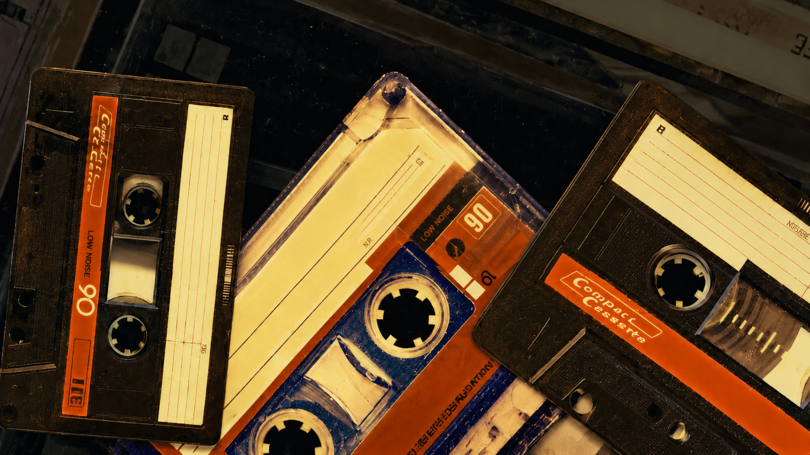
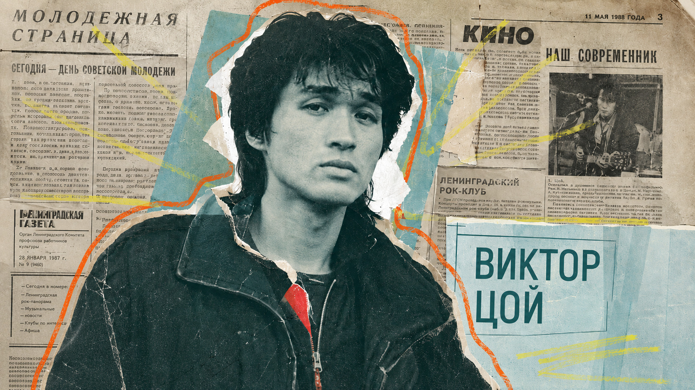

Дорогие друзья!
В брифе уже заложены сильные и чёткие идеи, визуальный язык проекта для нас понятен. Мы предлагаем развить их через систему, которая объединяет архивный материал и реконструкции в единое визуальное пространство.
Архив в этой логике становится живым коллажем памяти, а реконструкции — его продолжением, где история получает визуальную форму. Между ними нет жёсткой границы: они перетекают друг в друга через монтаж, текстуры и графические приёмы.
Мы стараемся сохранить единый стиль на всех этапах, чтобы фильм ощущался цельным, а визуальный язык — последовательным и узнаваемым.
Главная мысль: Архив = fan-made collage system — фанатская, эмоциональная, многослойная система из фото, видео, бумаги и рукописных пометок.
Реконструкция — это визуальная интерпретация событий, которых нет в архиве. Четыре режима подачи, которые мы можем смешивать.
Переходы между архивом и реконструкцией:
Система создаётся через комбинацию программ:

Этот проект показывает, как мы можем оживить архивы и истории Виктора Цоя через визуальный язык анимации. Все элементы — от архивных материалов до реконструкций — будут построены так, чтобы создавать цельное и живое ощущение истории.
Также приглашаю вас перейти по ссылке на Яндекс Диск, где вы найдёте больше референсов. Возможно, вам понравятся другие варианты, и мы сможем немного скорректировать направление. Надеюсь, что вместе мы нащупаем верный путь и получим интересную, гармоничную историю, которая органично впишется в ваш фильм.
Открыть Яндекс Диск